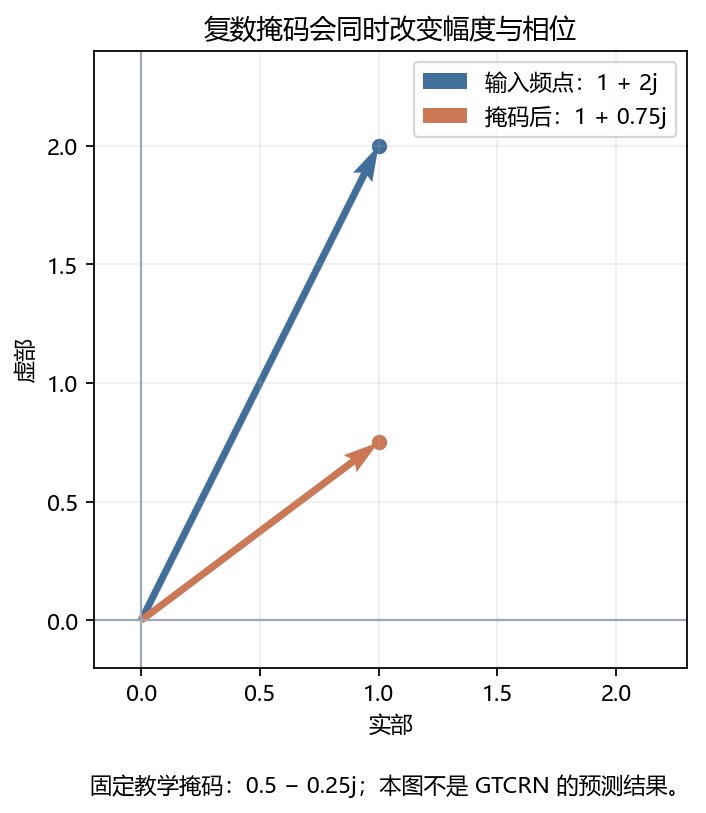
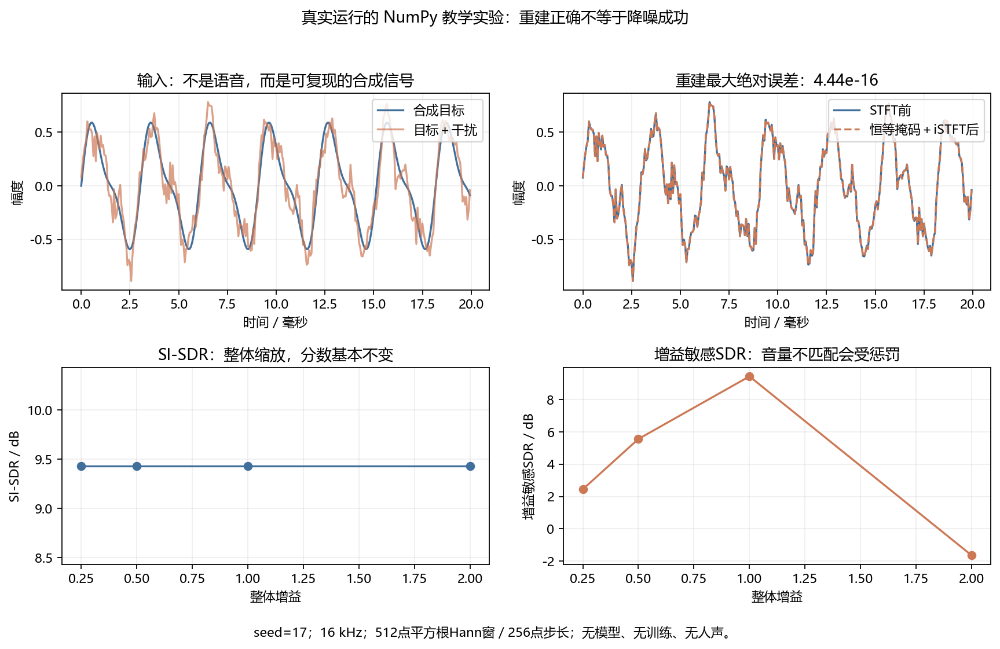
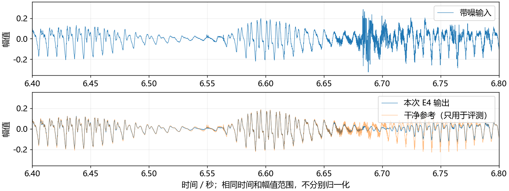
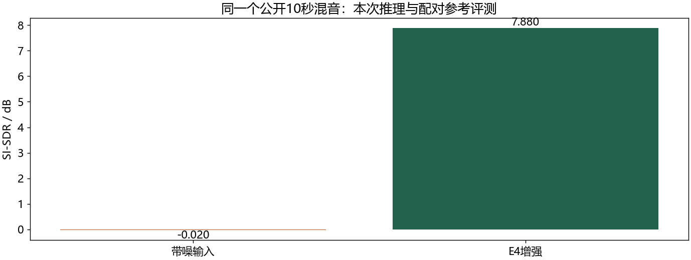

看图理解 · 跟着推演 · 对照真实结果
项目一 · 沿一段声音读懂GTCRN
先建立直觉，再逐节讲原理、代码与结果；章节目录可定位学习。从复数掩码的实际算例出发，读懂GTCRN张量、受控训练结果和软件流式状态。
从直觉、原理，到代码与结果
本版保留导览小实验，增加教材逐节精讲、代码分段阅读和结果解释。三个项目另有本次真实模型短推理，第 12 课增加实际训练曲线。按右侧小节分次学习即可，不必一次看完。
完整文字、规范公式和注释代码仍在上方“读完整图文”。视频中的历史报告、教学算例与本次实测分别标明，短演示不冒充完整重训或设备验收。
先修：采样、STFT、复数、增强和训练基础
- 画出WAV到增强WAV的完整路径
- 手算复数掩码并解释张量轴
- 区分项目报告、教学实验和个人掌握
自己复跑：完整中文注释脚本
下载三个项目的短推理脚本 project_demo.py。它调用原项目实现，不是重新实现整个模型；有中文注释，检查输入、模型身份和输出，不下载资源或启动训练。
- 先按你对应项目的 README 准备项目环境、固定权重和公开示例；使用那个环境的 Python。缺少依赖时先核对解释器，别混用多个环境。
- 把脚本保存到电脑，打开终端进入脚本所在目录。将下面两个路径换成你的真实路径，输出目录必须不存在。
- 运行后看 report.json。增强与分离还会保存 WAV；分离的浮点分析音频试听前应检查峰值，必要时使用共同安全增益。
python project_demo.py gtcrn --project "D:/我的项目/gtcrn-headset-enhancement" --output "D:/学习输出/gtcrn-01"本脚本已在本次审查副本中分别复跑三个项目。分数应按相同模型、输入和统计口径比较，耗时会随机器和负载变化。失败时保留日志，修复后换一个新输出目录；不要删除模型校验来绕过错误。
本课覆盖清单与证据范围
- A 先知道这个项目解决什么问题
- B 一个 WAV 在代码里怎样变成张量
- C GTCRN 内部：先看数据形状，再记模块名
- D 训练和推理不是一回事：读懂 E0 到 E5
- E 怎样读成绩：看正结果，也看退化
- F 流式不是把整段切块后各自跑一遍
- G 七次90分钟学习：每次都留下一个可检查的产物
- H 把项目讲清楚，而不是只背一个分数
结果从哪里来
- 导览中的小算例实际执行
- 原教材逐节讲解；正文代码/公式/图保留
- 新增真实运行与记录：depth-assets
本课含教材逐节精讲和本次真实短推理；GTCRN使用项目E4，分离使用官方预训练，识别使用冻结Zipformer。历史微调/三种子报告未全量重训；不声称声卡或芯片验收。
新版视频时间轴已改变，单独记录续播位置；学习计划的完成勾选保持不变。
跟着运行：注释代码、实际输出与结果图
下面代码在生成本站时实际执行。这里只是教学小实验，不是完整模型训练或业务设备测评。
import numpy as np
Y = 1 + 2j # 一个带噪频点，实部1、虚部2
M = 0.5 - 0.25j # 人为教学掩码，不是模型预测
# 复数乘法有交叉项，不能只把实部虚部分别相乘
real = M.real*Y.real - M.imag*Y.imag
imag = M.real*Y.imag + M.imag*Y.real
S = real + 1j*imag
assert np.isclose(S, M*Y)
# 两条线从原点画到复平面的输入/输出向量
real_axis = np.array([0., 1.])
input_path = np.array([0., Y.imag])
output_path = np.array([0., S.imag])
print('输入:', Y)
print('输出:', S)
print('幅度:', round(abs(Y), 4), round(abs(S), 4))
print('相位/度:', round(np.angle(Y, deg=True), 2), round(np.angle(S, deg=True), 2))
本次实际输出
输入: (1+2j) 输出: (1+0.75j) 幅度: 2.2361 1.25 相位/度: 63.43 36.87

精讲中的代码、运行步骤与大图
代码片段用于逐行理解；真实运行结果仅限明确标注“本次实际”的部分。教材历史图保留原有实验范围。
代码精读 02 · 第1–10行
源码精读 / 教学片段，需配套环境与上下文，不等同于独立脚本。
# wave：一条浮点单声道音频，shape 为 [L]
x = torch.as_tensor(wave, dtype=torch.float32)[None, :]
# 增加 batch 轴后是 [1, L]；最后一轴始终是时间样本
spec = analysis(x) # [1, 257, T, 2]
# 模型参数已加载；推理阶段不求梯度、不更新权重
with torch.inference_mode():
enhanced = model(spec) # [1, 257, T, 2]
# 必须传原长度，防止合成波形的末尾样本数变化
y = synthesis(enhanced, length=x.shape[-1])
assert y.shape == x.shape # 只检查shape，不代表听感合格代码精读 03 · 第1–10行
源码精读 / 教学片段，需配套环境与上下文，不等同于独立脚本。
real = spec[..., 0].permute(0, 2, 1) # [B, T, 257]
imag = spec[..., 1].permute(0, 2, 1) # [B, T, 257]
# 极小正数用于稳定平方根；幅度不是实部与虚部直接相加
mag = torch.sqrt(real.square() + imag.square() + 1e-12)
feat = torch.stack([mag, real, imag], dim=1) # [B, 3, T, 257]
feat = self.erb.bm(feat) # [B, 3, T, 129]
feat = self.sfe(feat) # [B, 9, T, 129]
feat, skips = self.encoder(feat) # [B, 16, T, 33]
feat = self.dpgrnn1(feat) # shape不变，信息被更新
feat = self.dpgrnn2(feat) # 再建模频率与时间关系结果读图 03 · C GTCRN 内部：先看数据形状，再记
原教材运行记录

原教材已存图 不是本次新测 先确认实验范围 再解释坐标与单位
代码精读 04 · 第1–8行
源码精读 / 教学片段，需配套环境与上下文，不等同于独立脚本。
model.train() # 训练模式，与推理模式不同
optimizer.zero_grad(set_to_none=True) # 清除上一批梯度
pred = model(analysis(noisy)) # 带噪波形转频谱后送入模型
true = analysis(clean) # 干净目标使用同一前端
loss = objective(pred, true, length=clean.shape[-1])
loss.backward() # 反向传播：计算参数的梯度
torch.nn.utils.clip_grad_norm_(parameters, 5.0) # 抑制过大梯度
optimizer.step() # 只有这一步真正更新参数结果读图 05 · E 怎样读成绩：看正结果，也看退化
原教材运行记录

原教材已存图 不是本次新测 先确认实验范围 再解释坐标与单位
准备运行：输入、模型、输出各自在哪里
等价复跑步骤，结果另列
项目根目录，使用已安装的 Python 环境
python portable/enhance.py
portable/samples/noisy.wav outputs/study_new.wav
上面展示参数拆行；实际命令写在同一行
输入：16 kHz / 单声道 / 160000 点
模型：E4 seed17，先核验 SHA256
输出使用新名字；已有文件会拒绝覆盖追踪真实接口：一次push如何接到模型
源码精读 / 教学片段，需配套环境与上下文，不等同于独立脚本。
# 接口教学改写：须在项目环境准备输入
engine = Enhancer(threads=1)
outputs = [] # 每个会话一个独立实例
for block in blocks: # 保留跨块状态
outputs.append(engine.push(block))
outputs.append(engine.flush()) # 补齐尾部
y = np.concatenate(outputs)
assert len(y) == len(x) # 只验证保长
engine.reset() # 下一会话必须重置真实波形：同一坐标看增强前后
本次实际运行

输入 160000 点 输出 160000 点 采样率 16000 Hz E4 seed17 分块 256 点
真实指标：改善多少，证据能推多远
本次实际运行

输入 -0.020 dB 输出 7.880 dB 本次单样例 非全量测试 非主观MOS
闭卷自测：输入1+2j、掩码0.5−0.25j，输出是什么？能据此证明降噪好吗？
输出1+0.75j；只能核验复数乘法，不能证明降噪，因为此例没有完整模型、真实语音或干净参考评测。
逐字讲稿 · 可定位回看
把频谱想成按时间和频率排好的工作台。模型给每个位置一个修改规则，修改后再合成回声音。这个类比只帮你理解流程，不能说网络真的知道哪一格百分之百是噪声。
只看一个复数频谱格点：实部为 4、虚部为 2。用最简单的特殊掩码：实部 0.5、虚部 0。 乘完后实部变 2、虚部变 1。这次只是把这个格点缩小一半，没有改变它的相位方向。
一般复数掩码还可能改变相位。多个格点处理后，需要正确的逆变换和重叠相加，才回到波形；还要检查语音有没有被损伤。 把所有格点都统一乘 0.5 只是调小音量，不能据此声称提高信噪比。真实增强需要有区别地处理并验证保真。
你戴耳机开会，旁边有人敲键盘。这个项目希望保留目标语音、减少干扰，输入是一段带噪声音，输出还是一段声音。它不是把话转成文字的识别模型，也不是负责生成语音的合成模型。
推理主线是读取单声道文件，做短时傅里叶变换，网络预测频谱修正，再逆变换回波形。先沿着一段声音走完这四步，比一上来背所有模块缩写更容易理解。
前半部分先用小算例建立直觉，后面的精讲逐节展开，并加入本次真实模型运行。历史训练报告与本次短推理分开标注；不把官方架构和未亲自掌握的内容写成个人原创。
项目采样率为十六千赫兹，两秒就是三万两千点。FFT 长度五百一十二，窗覆盖三十二毫秒，帧移二百五十六对应十六毫秒；实值输入的单边频点数是二百五十七。
离线前端使用中心填充，帧数为长度除二百五十六向下取整再加一，因此两秒对应一百二十六帧。频谱形状是批次、频率、时间、实虚部，单条样本就是一、二百五十七、一百二十六、二。
最后的二表示实部和虚部，不是双声道。网络特征又把幅度、实部、虚部排成三个特征通道。读代码时每次转置都要写出轴含义，否则形状数字能对上，也可能把时间和频率送反。
取一个频点，输入是一加二倍虚数单位，掩码是零点五减零点二五倍虚数单位。展开乘法时，虚数单位的平方等于负一，所以实部不仅有实部乘实部，还要减去虚部乘虚部。
实部算成零点五乘一，减去负零点二五乘二，得到一。虚部是零点五乘二，加负零点二五乘一，得到零点七五。输出是一加零点七五倍虚数单位。
如果你把实部和虚部分别相乘，就会得到错误的零点五和负零点五。复数掩码不是仅仅让音量变小，它可以旋转复平面向量，也就是改变相位；这个能力与只用非负幅度掩码不同。
前三行定义一个复数频点和人为设置的掩码。代码里的 j 表示虚数单位。这里没有调用模型，因此掩码不能写成网络学到的结果，更不能拿这一个点证明语音增强质量。
中间四行分别计算实部和虚部，再组成输出复数，断言它与 NumPy 直接做复数乘法一致。这样既看清公式，也有独立实现交叉检查，不只是照抄一个最终数值。
后面构造从原点到两个复数端点的线段，并打印幅度与相位。由于这个例子输入输出实部恰好都是一，两条线共用同一个横坐标数组；这只是选取的算例巧合，不是复数掩码的一般性质。
先看坐标：横轴实部，纵轴虚部，不是时间和幅值。输入线段从原点到一点、两点，输出从原点到一点、零点七五。端点数字来自上面代码的实际运行。
输入模长约二点二三六，输出模长一点二五；输入相位约六十三点四三度，输出约三十六点八七度。长度变化说明幅度变了，方向变化说明相位也变了。
这张图没有告诉你键盘声是否被去掉，因为我们没有给出干净语音真值，也没有运行整个时频序列。它解决的是一个更基础的问题：你能否正确解释模型最后应用掩码时到底算了什么。
项目先保留较细的低频表示，把较高频部分压缩，二百五十七个频点变成一百二十九维表示。再展开邻近频率信息，三个特征通道变成九个，让网络看到局部频率关系。
编码器继续压缩频率尺寸，两个双路径循环模块分别处理同一帧内频率关系和跨帧时间记忆。频率路径可以双向，因为同一帧的各频点已经一起得到；时间路径则保持单向。
解码时利用早期特征，再映射出复数掩码。高频展开采用固定映射，不是压缩的严格数学逆，不能说无损恢复全部信息。先把每个模块改变哪个轴说清楚，再深入门控与卷积公式。
项目的官方预训练权重叫 E2，不是你从零训练的成果。E3 是共同父模型。之后 E3c、E4 和 E5 都从同一个父状态再训练五千步，目的是控制额外计算预算的影响。
E3c 保持原数据，E4 加入目标噪声代理场景；E5 与 E4 使用相同输入、目标和顺序，只移除续训阶段的波形损失项。比较 E4 与 E3c，才更接近问目标适配带来了什么。
如果只把 E4 和没多训练的 E3 相比，改善可能只是多训练的结果。E4 与 E5 的差别也不能推广成从零训练时删除波形项的结论。实验结论必须紧贴真正控制住的变量。
已提交报告中，固定目标噪声集上 E4 相对 E3c 的三种子平均 SI-SDR 增量约六点一四分贝，但官方全文件测试平均退化约零点二四分贝。正负结果都要一起保留。
这里三个种子的标准差描述训练随机性，不是置信区间。后续十二个新噪声来源形成三百八十四条组合混音，组合数量增加不等于有三百八十四条独立新录音，也不是全新说话人的盲测。
不同指标还可能方向不一致。尺度不敏感的 SI-SDR 不能单独证明响度正常或主观更好，没有干净参考时也不能硬算有参考指标。应同时检查增益、可懂度、失败样例和测试条件。
软件流式链持续接收输入，凑齐一帧后使用旧网络状态计算，再保存新状态。卷积历史、循环记忆和重叠相加缓存都要延续。每块重新初始化，可能丢失跨块信息并产生边界问题。
项目的便携实现用 NumPy 做前后端，用 ONNX Runtime 计算网络。二百五十六点对应十六毫秒输入，但第一次完整输出需要收到五百一十二点，即三十二毫秒输入量，计算和声卡缓存还要另算。
结束时 flush 处理尾部，新会话必须 reset 或新建实例。RTF 小于一只说明平均处理比播放快，仍要看尾延迟和超预算次数。项目软件验收不能自动等同于真实声卡闭环或者耳机芯片部署。
暂停回答：二秒输入的最后一轴为什么是二？因为它把复数拆成实部和虚部，而不是两个录音声道。再手算今天的复数掩码，确认能不看视频得到一加零点七五倍虚数单位。
下一步在已有项目环境运行一次短推理，检查本次模型身份、采样率、输入输出长度和分块方式。不要默认演示入口就加载最终适配权重，也不要把历史报告复制成自己的新运行记录。
面试时说明上游架构、工具协作和自己能独立修改验证的部分。先讲输入输出，再讲受控实验、一个失败和状态边界。你可以以视频理解主线，但真正能改代码、解释结果，才是这份项目带来的能力。
想象你戴耳机开会，旁边有人敲键盘。麦克风录到语音，也录到键盘声。语音增强希望保留目标语音、减小噪声。它的输出仍然是声音，不是文字。ASR 才负责“声音变文字”，TTS 则负责“文字变声音”。
GTCRN 网络来自 Rong Xiaobin 的开源实现；本项目的工作是复现、训练协议、场景适配、公平消融和部署验证。不要把网络架构写成自己的原创，也不要把现有代码完成等同于自己已经掌握。
需要的知识：采样率、单声道、样本数。为什么项目需要它：识别输入格式与时长。站内入口：第02课。
需要的知识：分贝与 SNR。为什么项目需要它：理解怎样控制噪声强弱。站内入口：第03课。
需要的知识：数组轴与广播。为什么项目需要它：看懂 batch、频点、时间帧、复数分量。站内入口：第04课。
需要的知识：STFT、窗、重叠相加。为什么项目需要它：解释波形与频谱来回转换。站内入口：第05课。
需要的知识：降噪与语音损伤。为什么项目需要它：知道“更安静”不等于“更好”。站内入口：第09课。
需要的知识：训练、验证、测试。为什么项目需要它：识别数据泄漏和不公平对比。站内入口：第12课。
本课完成标准：不看稿画出推理链，说明 E2/E3c/E4/E5 的区别，解释一项正结果、一项负结果，以及“16毫秒步长不是总时延”。
读代码先找入口。离线入口 scripts/infer.py 调用 src/gtcrn_project/inference.py 中的 Enhancer。核心方法 tensor() 依次调用 analysis()、模型、synthesis()。文件方法还检查采样率与声道。
采样率为 f下标s=16000 Hz。窗长 N=512 点，相邻窗移动 H=256 点。窗覆盖32毫秒，步长对应16毫秒。实值信号用单边频谱，因此频点数为：
原始输入为二维 [B,L]：B 是同时处理的音频条数，L 是每条音频的样本数。analysis() 返回 [B,257,T,2]：最后的2是实部与虚部，不是双声道。这里启用 center=True，时间帧数为：
例如2秒音频包含32000点，得到126帧。这是参数手算，不是本轮新运行的模型成绩。短音频不超过256点时，源码用零填充；更长输入用反射填充。
步骤：单条音频增加 batch 轴。shape：[1,32000]。把它读成一句话：一条2秒音频。
步骤：STFT。shape：[1,257,126,2]。把它读成一句话：每帧257个复数频点。
步骤：网络输入特征。shape：[1,3,126,257]。把它读成一句话：幅度、实部、虚部三组特征。
步骤：网络增强频谱。shape：[1,257,126,2]。把它读成一句话：轴顺序恢复为前端约定。
步骤：iSTFT。shape：[1,32000]。把它读成一句话：指定原长度，不能随意丢尾巴。
下面是 Enhancer.tensor() 主流程的教学改写，不是原文件逐字摘录。省略设备与异常检查，帮助你先抓住主干；不要拿它替换正式实现。
为什么 model.eval() 和 torch.inference_mode() 两个都要懂？前者切换 BatchNorm 等模块的行为；
后者关闭推理所需以外的梯度记录。二者不是同一件事。源码加载模型后调用 eval()，并给 tensor() 加推理模式装饰器。
先看中文注释：wave：一条浮点单声道音频，shape 为 [L]；增加 batch 轴后是 [1, L]；最后一轴始终是时间样本；[1, 257, T, 2]。这里调整张量形状或增加长度为一的维度。样本值未因此获得新信息，要分清批次、通道和时间。
先看中文注释：[1, 257, T, 2]；必须传原长度，防止合成波形的末尾样本数变化；只检查shape，不代表听感合格。断言把预期写成可失败的检查。通过只说明这一条件成立，不自动代表声音质量或全部场景合格。
先看中文注释：wave：一条浮点单声道音频，shape 为 [L]；增加 batch 轴后是 [1, L]；最后一轴始终是时间样本；[1, 257, T, 2]。这里调整张量形状或增加长度为一的维度。样本值未因此获得新信息，要分清批次、通道和时间。 断言把预期写成可失败的检查。通过只说明这一条件成立，不自动代表声音质量或全部场景合格。
它不只是“把幅度调小”。因为两个分量交叉相乘，输出的幅度与相位都可能变化。源码的 Mask.forward() 正在做这两行运算。掩码不是干净语音真值，而是模型根据输入估计的修正量。
输入频点取 1+2j，教学掩码取 0.5-0.25j。本页的NumPy脚本实际算得输出 1+0.75j。图里的箭头表示复平面向量，不是声波传播方向。
蓝箭头代表输入，橙箭头代表输出。箭头长度变了，对应幅度变化；夹角变了，对应相位变化。这里是固定教学掩码，不是网络学出的掩码。
代码只保留复数乘法的四个分量，关键计算旁有中文注释。图由可复跑脚本生成，数值见本次运行结果。
源码对象：ERB(65,64)。你可以怎样理解：低频保留细节，高频合并表示。真实实现中的关键点：前65个频点保留，高频映射为64维；权重固定不训练。
源码对象：SFE(3,1)。你可以怎样理解：看一个频点时，也看左右邻居。真实实现中的关键点：Unfold 展开邻频，3组特征变9通道。
源码对象：GTConvBlock。你可以怎样理解：只变换部分通道，再交换信息。真实实现中的关键点：分组、逐点卷积、深度卷积、左侧时间填充、shuffle。
源码对象：TRA。你可以怎样理解：根据时间上下文调节通道重要性。真实实现中的关键点：对频率求能量均值，再经 GRU、线性层、Sigmoid。
源码对象：DPGRNN。你可以怎样理解：一条路径看同帧各频率，一条看跨帧时间。真实实现中的关键点：频率路径双向，时间路径单向；不能见“双向”就断定读了未来音频。
源码对象：Decoder。你可以怎样理解：恢复频率分辨率并利用早期细节。真实实现中的关键点：与对应编码器特征相加，不是通道拼接。
ERB.bs() 使用固定转置滤波映射，把掩码从129维映射回257维。它不是压缩操作的严格数学逆，不要说“无损还原了全部高频信息”。
下面把 GTCRN.forward() 前半段改写成带中文注释的教学版本。spec 的轴顺序必须与上一节一致。 你不必第一天推完全部 GRU 公式。先能说明：输入是什么、改变哪个轴、缓存什么、输出怎样回到波形。这比背十个模块缩写更适合入门。
先看中文注释：[B, T, 257]；[B, T, 257]；极小正数用于稳定平方根；幅度不是实部与虚部直接相加。平方根常用于把均方量还原成幅度尺度。检查开方前是否非负，以及稳定项是在分母还是根号内部。
先看中文注释：[B, 9, T, 129]；[B, 16, T, 33]；shape不变，信息被更新。这几行仍属于C GTCRN 内部：先看数据形状，再记模块名的同一处理链，输入变量沿用前一段，不是一个独立程序。
先看中文注释：[B, T, 257]；[B, T, 257]；极小正数用于稳定平方根；幅度不是实部与虚部直接相加。平方根常用于把均方量还原成幅度尺度。检查开方前是否非负，以及稳定项是在分母还是根号内部。
先看这张随教材保存的图。真实运行的复数乘法：输入与输出的幅度和相位都改变；不是GTCRN模型预测。本次视频引用既有结果，不把它称为新运行。
横轴、纵轴、图例和单位决定图在回答什么问题。若曲线重合，先问它验证的是数值等价、形状还是算法质量。图像相似不自动证明真实业务效果相同。
把图中观察与本节假设联系起来，再回到前面的代码确认数组来源。合成信号实验、历史报告和真实模型输出属于不同证据范围，不能混成同一个成绩。
推理是加载已有权重，把输入变成输出。训练是用带噪/干净成对样本计算损失，再反向传播更新权重。你的项目两者都有，但一次默认推理不等于运行了自己的最终模型。
编号：E0。具体是什么：原始带噪音频。应该怎样使用：不处理基线。
编号：E1。具体是什么：传统谱减。应该怎样使用：简单可解释基线。
编号：E2。具体是什么：作者官方 DNS3 权重。应该怎样使用：外部参照；不是本项目训练成绩。
编号：E3。具体是什么：使用本项目协议从零训练。应该怎样使用：分支实验的共同父模型。
编号：E3c。具体是什么：从同一父状态续训5000步，使用原配对数据。应该怎样使用：控制额外训练预算。
编号：E4。具体是什么：同样续训5000步，混入键盘/碰撞代理场景。应该怎样使用：检查目标场景适配。
编号：E5。具体是什么：与 E4 输入、目标、顺序相同，只移除波形损失项。应该怎样使用：检查该续训阶段的波形项作用。
为什么不能只比较 E4 与 E3？因为 E4 又训练了5000步，改善可能来自多训练，而不全来自目标噪声。E3c 是“额外预算相同”的对照。E4 与 E5 只检验共同父点之后的续训损失，不代表从零开始移除波形项的完整实验。
完整损失使用 lambda=1，E5 使用 lambda=0。源码里的幅度指数是0.3，实部/虚部除以幅度的0.7次幂。幅度有小正数保护；别在静音频点直接除零。
要特别注意：训练波形项不等于报告里的 SI-SDR。波形损失保留上游定义，不去均值，且没有评测公式前面的10倍因子；metrics.si_sdr() 会去均值，并用 10以十为底的对数。名字相似不代表数值能直接互换。
项目还保留模型、Adam 状态、随机数状态和数据计划，检查恢复训练。只保存模型权重能继续推理，但不等于精确恢复训练。
先看中文注释：训练模式，与推理模式不同；清除上一批梯度；带噪波形转频谱后送入模型。backward沿计算图求梯度。它本身不更新权重；还要检查梯度有限并调用优化器更新。 先清除上一轮累计梯度，否则新的梯度会继续叠加，除非你本来就在设计梯度累积。
先看中文注释：抑制过大梯度；只有这一步真正更新参数。step使用已有梯度更新参数。训练前清梯度、反向传播、更新这三个步骤的顺序不能混淆。
先看中文注释：训练模式，与推理模式不同；清除上一批梯度；带噪波形转频谱后送入模型。backward沿计算图求梯度。它本身不更新权重；还要检查梯度有限并调用优化器更新。 step使用已有梯度更新参数。训练前清梯度、反向传播、更新这三个步骤的顺序不能混淆。
指标或动作：SI-SDR。检查什么：输出与参考在尺度不敏感意义下的匹配。不能据此推出什么：不能单独证明响度正确或主观更好。
指标或动作：STOI。检查什么：有参考的语音可懂度代理指标。不能据此推出什么：不是人工准确率，也不是人工 MOS。
指标或动作：增益敏感 SDR / RMS增益。检查什么：是否改变整体增益或带来波形误差。不能据此推出什么：不能替代语音内容与听感评测。
指标或动作：DNSMOS。检查什么：无参考质量预测，作为辅助信息。不能据此推出什么：不是真人打分，不能伪称听过。
指标或动作：试听。检查什么：检查金属音、吞字、残余噪声等问题。不能据此推出什么：少数好样例不能代表整体。
设去均值参考为 s，输出为 估计 s。先把输出投影到参考方向，再比较目标能量与残差能量。非退化条件下：
这要求参考有非零能量，分母不能为零。正式代码另有极小数、上下限和无效标记。静音参考不能硬算出一个“很好看”的分数；没有干净参考的真实通话也不能算有参考 SI-SDR/STOI。
下面不是项目测试集，也没有运行GTCRN。脚本构造了330Hz与660Hz的谐波目标，加上1100Hz干扰和固定种子的随机噪声。先用恒等掩码检查STFT重建，再对同一混合信号整体缩放。
1. 左上说明合成目标与带干扰输入不同，这不是人声。 2. 右上两条线几乎重合，重建最大误差为 4.44乘10的幂-16。 3. 左下整体增益取0.25、0.5、1、2，SI-SDR均约9.4341dB。 4. 右下增益敏感SDR分别约2.4457、5.5559、9.4293、−1.6387dB。
重建误差小只说明这一前后端组合能还原输入。它把原噪声也原样还原，不能据此说“降噪成功”。同理，整体放大或缩小没有改变信噪比，却改变了响度与增益敏感误差。
教学实验的指标函数如下。它只处理本实验的非退化样本，不能代替正式评测器完整的静音、零残差和异常保护。
本实验的频谱shape为 [63,257]，轴顺序是“时间帧、频率”。仓库接口是 [B,257,T,2]，因此不能把教学频谱原样传给模型。shape相似不等于接口兼容。
固定目标集对三个训练种子分别计算同样本配对差，再求均值与样本标准差。下表来自 replications/reports/three_seed_results.csv。
E4 对比 E3c 的范围：固定目标噪声，三种子。SI-SDR差值 / dB：+6.143正负0.432。STOI差值：+0.055707正负0.002394。应怎样理解：目标适配在这些固定测试上有收益。
E4 对比 E3c 的范围：官方全文件测试，三种子。SI-SDR差值 / dB：-0.239正负0.055。STOI差值：-0.002719正负0.001117。应怎样理解：原域整体有退化，必须保留。
E4 对比 E3c 的范围：干净输入，三种子。SI-SDR差值 / dB：+3.008正负0.266。STOI差值：-0.003384正负0.001816。应怎样理解：不同指标方向可不同，不能只选一个讲。
这里的 正负 是三个训练结果的样本标准差，不是置信区间或显著性证明。三次训练不增加独立噪声录音数量。
后来增加12个新噪声来源，仅使用 seed17 权重。每类3个来源，先在来源内平均，再对来源等权平均。结果来自 robustness/results/external_noise_v1/summary.json。
新噪声类别：键盘。SI-SDR差值 / dB：+6.3377。STOI差值：+0.109811。
新噪声类别：木门敲击。SI-SDR差值 / dB：+2.9838。STOI差值：+0.028791。
新噪声类别：发动机。SI-SDR差值 / dB：+0.3177。STOI差值：−0.003143。
新噪声类别：环境风声。SI-SDR差值 / dB：−0.0032。STOI差值：−0.007961。
新噪声类别：12来源等权平均。SI-SDR差值 / dB：+2.4090。STOI差值：+0.031874。
平均改善不代表每条都好：SI-SDR 有8个来源改善，STOI 只有5个来源改善。384条混音由12条原噪声、4条既有语音、时长与 SNR 组合得到，不能说“384个独立新场景”。这也不是全新说话人的盲测。 这里 x 是带噪输入，f(x) 是 E4 输出。较小的 alpha 可能少损伤语音，但也把噪声加回来。仓库做的是固定强度推理对照，没有训练新网络，也没有用测试成绩选一个最好值替换默认值。
先看这张随教材保存的图。真实NumPy教学运行图：恒等掩码可重建输入，但不能降噪；SI-SDR不惩罚整体增益，而增益敏感指标会变化。本次视频引用既有结果，不把它称为新运行。
横轴、纵轴、图例和单位决定图在回答什么问题。若曲线重合，先问它验证的是数值等价、形状还是算法质量。图像相似不自动证明真实业务效果相同。
把图中观察与本节假设联系起来，再回到前面的代码确认数组来源。合成信号实验、历史报告和真实模型输出属于不同证据范围，不能混成同一个成绩。
离线处理可以一次读完整个文件。流式处理要持续接收块、维护状态、及时输出。每块都重新初始化网络，会丢掉跨块时间记忆，也可能产生边界伪影。
目前最轻便的实现位于 portable/gtcrn_portable/engine.py，使用 NumPy 做 DSP，用 ONNX Runtime 运行网络。正常推理不导入 PyTorch，不需要 GPU。旧版流式链仍用 PyTorch 做 DSP；两个版本的测时范围不能混在一起。
状态：单帧输入。实际 shape 或大小：[1,257,1,2]。为什么存在：固定 batch 为1，每次只输入一帧。
状态：卷积状态 conv。实际 shape 或大小：[2,1,16,16,33]。为什么存在：保留时间卷积所需历史。
状态：注意力状态 tra。实际 shape 或大小：[2,3,1,1,16]。为什么存在：继承时间注意力的循环状态。
状态：时间RNN状态 inter。实际 shape 或大小：[2,1,33,16]。为什么存在：继承跨帧记忆。
状态：三个DSP可变缓存。实际 shape 或大小：6144字节。为什么存在：输入环形缓存、OLA分子、OLA分母。
状态：网络可变状态。实际 shape 或大小：72192字节。为什么存在：仅上述状态，不是整个进程内存。
不能把“缓存只有约78KB”写成“程序只用78KB内存”。模型权重、常量、临时数组和运行时都还占内存。
一个256点块对应16毫秒输入。该分块模式下，第一次完整输出需要收到512点，即32毫秒输入量。计算耗时、声卡缓冲、驱动、播放等还要另外考虑。
RTF小于1说明平均处理速度快于播放速度，不保证每次回调不超时。应同时看 P95、P99、最大值与超预算次数。
已提交便携验收在 i7-14650HX、CPU单线程、10秒音频的短微基准中报告：平均0.863762毫秒，P99为1.537024毫秒，平均RTF为0.053985。它不含文件I/O、模型初始化，不是旧30分钟测试的替代，也不是耳机芯片或真实声卡闭环验收。
192个数值用例中与参考的最大绝对误差为 5.13345乘10的幂-6；数值接近不等于逐比特相同。
正式便携程序的状态规则很值得面试时讲清楚：空块可返回空；第二次 flush() 返回空；
flush() 后必须 reset() 才能继续；不同会话要隔离状态。
先完成本页阅读和纸笔练习，再在项目已配置环境里运行命令。不要为了学习自动重启已经结束的训练，也不要覆盖历史结果。
次数：1。前15分钟：看项目视频。中间45分钟：读A、B节，补采样与STFT。后20分钟：手画shape链。最后10分钟与验收：闭卷解释最后一轴的2。
次数：2。前15分钟：复习shape。中间45分钟：读C节并对照模型源码。后20分钟：手算一次复数掩码。最后10分钟与验收：说清频率双向不等于时间双向。
次数：3。前15分钟：复述推理与训练。中间45分钟：读D节，画三分支对照。后20分钟：为每组写“只改变了什么”。最后10分钟与验收：解释为何比较E4与E3c。
次数：4。前15分钟：看指标表。中间45分钟：读E节和负结果。后20分钟：写一张不夸大的结果卡。最后10分钟与验收：解释384条为何不是384来源。
次数：5。前15分钟：复习窗与hop。中间45分钟：读F节和状态规则。后20分钟：画push/flush/reset时序。最后10分钟与验收：解释16ms、32ms、RTF区别。
次数：6。前15分钟：确认项目环境。中间45分钟：按下面步骤运行一次便携推理。后20分钟：检查收据和输入输出长度。最后10分钟与验收：记录真实命令与报错，不编结果。
次数：7。前15分钟：回答自测题。中间45分钟：对照答案补弱点。后20分钟：录一段3分钟项目讲解。最后10分钟与验收：不看稿说出局限与下一步。
第6次分成两个层次：本站教学实验不需要模型；项目推理使用GTCRN仓库。不要混用两个工作目录。先使用已有已配置环境；项目推理依赖未安装时，按仓库 portable/README.md 准备。
若今天只想先复跑本站教学图，可在学习网站根目录运行下面的命令。它仅依赖NumPy与Matplotlib，不需要模型或真实音频；输出限于本课的两张教学图和JSON结果。
运行后查看同名JSON收据，核对模型SHA、输入输出样本数、分块方式。试听时同时比较残余噪声、吞字、金属音和音量；不应仅用“更安静”下结论。测试报告若失败，要记录环境和完整错误，不能直接复制仓库旧成绩当成本机成绩。
问题：32000点、16kHz是多少秒？本项目STFT有几帧？。参考答案：2秒；中心填充下126帧。最后的2表示实部/虚部。
问题：输入频谱为1加2j，掩码为0.5减0.25j，输出是什么？。参考答案：实部1，虚部0.75；这是复数相乘，不是逐分量相乘。
问题：为什么不把采样率标签从48k改成16k就直接用？。参考答案：改标签会改变解释的时长与音高；需要真正重采样并考虑抗混叠。
问题：默认scripts/infer.py代表最终E4吗？。参考答案：不代表，默认是官方E2；必须显式选择对应E4检查点。
问题：网络见到未来时间帧了吗？。参考答案：时间路径单向、时间卷积左填充；频率内双向不读取未来时间。但前端启动缓存仍产生延迟。
问题：E4平均提升，能说各种噪声都更好吗？。参考答案：不能，外部风声和发动机STOI有退化，且来源数有限。
问题：数据集有干净参考，评测前能随意对齐输出吗？。参考答案：不能偷偷做最优对齐；本项目按既定样本对齐协议，异常应定位。
问题：两段会话用同一引擎，之间只停止push够吗？。参考答案：
不够，结束要flush，新会话要reset，或建立独立实例。
问题：三个训练种子的标准差和12来源标准差一样吗？。参考答案：不一样：前者描述训练随机性，后者描述来源差异。
“我复现了GTCRN语音增强，使用固定前端把16kHz单声道变成复数频谱。网络预测复数掩码，再合成等长波形。我用同一父模型与相同更新预算比较原数据续训、目标噪声增广和波形损失消融。固定目标集三种子改善约6.14dB，但官方全文件测试有小幅退化，所以不能声称普遍更优。
我又检查12个新噪声来源，发现收益主要集中在键盘和敲击。部署上实现了保留网络状态的NumPy/ONNX软件流式链，验证分块、尾部和数值一致性；尚未做真实声卡或耳机芯片验收。”
这是一段练习模板，不代表你已经亲自完成或掌握其中全部工作。简历要据实区分自己独立完成、借助工具完成、已有仓库提供的部分；面试前必须能解释每个模块并复查结果。
1. 先把错误分析做清楚：哪些噪声改善，哪些语音受损。 2. 再设计新评估：新录音来源、新说话人、不同设备条件。
3. 学会完整测量：初始化、I/O、回调尾延迟和缓存边界。 4. 最后研究联合链路：增强后ASR是否真的更准。
第4点是后续学习问题，不是本项目已经证明的结论。增强质量指标提高，并不自动意味着识别错误率降低。接着学习第13课：ASR，再回到第17课：项目与复盘。
现在不只看示意图，而是进入项目已有的便携推理入口。我们在隔离的项目副本中，使用仓库随附的十秒公开混音，模型是项目最终的E4，而不是默认官方E2。模型哈希已按项目清单核对。
命令的两个位置参数分别是输入WAV和新输出路径。画面为了阅读拆成几行，真正运行时应写成一行。输入必须是十六千赫兹单声道，代码不会偷偷帮你改采样率或归一化。
输出使用新文件名，因为程序明确拒绝覆盖已有音频、临时文件或收据。运行后不仅检查WAV，还要检查同名JSON里的模型身份、样本数和分块配置。
这里的Enhancer把前后端与ONNX单帧处理器组合起来。初始化时读取模型元数据、校验哈希、建立CPU会话，并初始化卷积、注意力和循环状态。它不是每接收一块都重新加载模型。
push接收新块，内部先积累足够历史形成一帧，计算短时频谱，再把当前频谱和旧状态一起交给网络。网络返回增强频谱和新状态。不是把一个十六毫秒块独立当作完整录音。
flush完成剩余帧与尾部重叠相加，最后检查总输出样本数。reset同时清理DSP和网络状态。长度一致只说明接口保长，声音是否更好仍要看配对指标、试听和失败样例。
这张图来自本次真实模型输出，不再是一个频点的手算。上图是混音，下图是E4增强，两图选同一时间范围，并且没有分别拉满峰值，因此可以观察实际幅值变化。
仅凭波形更小不能判断改善。噪声和语音都可能变小，所以还要与独立参考比较，并听有没有吞字、金属音和残余键盘声。这里的图解决的是输入输出确实存在、长度与时间对齐的问题。
公开样例是固定人工混音，不代表真实耳机全场景。模型权重、代码和输入身份都写进运行记录；这一次短推理不替代原来的三种子训练和完整测试。
本次按同一配对参考计算，输入SI-SDR约-0.02分贝，增强输出约7.88分贝。这是真实短演示的数值，不能与历史固定目标集的六点一四分贝微调增量混成同一个数字。
前者比较这个样例的输入与输出，后者比较两种训练分支在固定集合上的成绩。数据、基线和统计单位不同，所以不能只挑较大数字放在简历中。
SI-SDR对整体增益不敏感，还需要检查响度、削波与语音保留。若没有干净参考，只能换用明确标注的无参考指标和试听，不能伪造一个干净目标。
第二次推理保持输入和模型不变，只改成一百六十、二百五十六、四百八十、十七点循环投递。这样可以检查块边界是否错误地改变算法，尤其是最后不足一块和输出暂时为空的情形。
本次两份浮点输出的最大绝对差是0.0。这说明这一个样例的两种投递方式得到相同数值，不代表所有输入都自动通过，也不等于每次回调都满足实时预算。
固定二百五十六点投递时首次返回完整输出在收到五百一十二点后。不规则大块可能让调用方更晚取到输出，因此记录的首次返回位置会变化。输入投递粒度与算法内部步长不能混为一谈。
提示采样率或声道不符合要求，先显式重采样或按业务规则转单声道，不要改文件头骗过检查。哈希不一致时恢复正确模型，不应删掉校验来强行运行。
如果输出少尾巴，查flush和长度；如果第二段开头异常，查reset；若每个块都有接缝，查窗口、重叠权重和跨块网络状态。保留失败输入与精确块大小，写成回归测试。
最后再讨论效果和性能。一次文件推理RTF很小不等于声卡闭环验收；目标噪声改善也不代表所有噪声都改善。项目交付应保留这些边界，而不是删掉不好看的结果。
适用边界与参考正文
本课含教材逐节精讲和本次真实短推理；GTCRN使用项目E4，分离使用官方预训练，识别使用冻结Zipformer。历史微调/三种子报告未全量重训；不声称声卡或芯片验收。
教学图与实验图由本站整理生成；项目代码、预训练模型和公开数据的来源见配套正文。旁白是本地中文语音合成，不是教师真人录音，也不是 NotebookLM 生成。没有向 Google 上传项目材料。